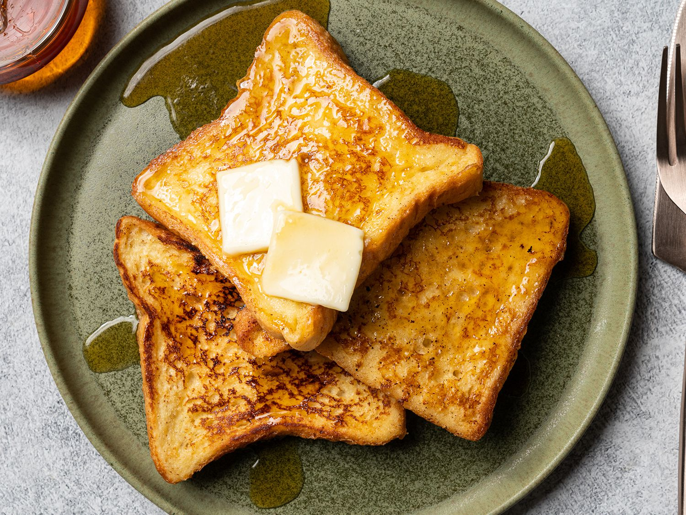

French Toast

The morning classic
Wake up to an irresistibly delicious breakfast that's super quick and easy
to whip up using a few basic ingredients you likely already have in your
kitchen.
Ingredients
- 1/4 cup - All-purpose Flour
- 1 cup - Milk
- 1 pinch - Salt
- 3 pieces - Eggs
- 1/2 tsp - Ground cinnamon
- 1 tsp - Vanilla extract
- 1 tbsp - White sugar
- 12 slices - Bread
Steps
- Measure flour into a large mixing bowl.
- Slowly whisk in the milk.
-
Whisk in the salt, eggs, cinnamon, vanilla extract and sugar until
smooth.
- Heat a lightly oiled griddle or frying pan over medium heat.
- Soak bread slices in mixture until saturated.
- Cook bread on each side until golden brown. Serve hot.